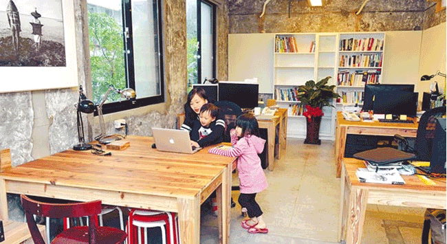

非典型辦公室 兼顧生活與工作
數位經濟產生新興型態的產業與工作，不僅改變了勞動結構和工作場域，也鬆動了工作與生活之間的界線。 以彈性與開放吸引眾多「非典」工作者的共同工作空間(co-working space)，因應進駐者愈來愈多變的需 求，開始出現友善小孩或毛小孩的環境，與傳統辦公室氛圍截然不同。
「非典」勞動人口近年顯著成長，美國 ....
燃燒吧，自造者魂！－ MakerBar Taipei
MakerBar Taipei 是 一 個 以 社 群 為 核 心， 結 合自造者空間與共同工作空間，推廣動手做精神的國際創新交流平臺。位於臺北市中心精華地段的MakerBar，具有得天獨厚的地理位置，周圍應有盡有的電子零件材料銷售大廠電子光華商城、舉辦精采展覽與吸引人潮的華山文創園區，以及培育科技與設計人才知名的臺北科技大學，甚至離臺北車站附....
非典型辦公室 兼顧生活與工作
發布時間：2017/02/10
數位經濟產生新興型態的產業與工作，不僅改變了勞動結構和工作場域，也鬆動了工作與生活之間的界線。 以彈性與開放吸引眾多「非典」工作者的共同工作空間(co-working space)，因應進駐者愈來愈多變的需 求，開始出現友善小孩或毛小孩的環境，與傳統辦公室氛圍截然不同。數位經濟產生新興型態的產業與工作，不僅改變了勞動結構和工作場域，也鬆動了工作與生活之間的界線。 以彈性與開放吸引眾多「非典」工作者的共同工作空間(co-working space)，因應進駐者愈來愈多變的需 求，開始出現友善小孩或毛小孩的環境，與傳統辦公室氛圍截然不同。數位經濟產生新興型態的產業與工作，不僅改變了勞動結構和工作場域，也鬆動了工作與生活之間的界線。 以彈性與開放吸引眾多「非典」工作者的共同工作空間(co-working space)，因應進駐者愈來愈多變的需 求，開始出現友善小孩或毛小孩的環境，與傳統辦公室氛圍截然不同。
數位經濟產生新興型態的產業與工作，不僅改變了勞動結構和工作場域，也鬆動了工作與生活之間的界線。 以彈性與開放吸引眾多「非典」工作者的共同工作空間(co-working space)，因應進駐者愈來愈多變的需 求，開始出現友善小孩或毛小孩的環境，與傳統辦公室氛圍截然不同。數位經濟產生新興型態的產業與工作，不僅改變了勞動結構和工作場域，也鬆動了工作與生活之間的界線。 以彈性與開放吸引眾多「非典」工作者的共同工作空間(co-working space)，因應進駐者愈來愈多變的需 求，開始出現友善小孩或毛小孩的環境，與傳統辦公室氛圍截然不同。數位經濟產生新興型態的產業與工作，不僅改變了勞動結構和工作場域，也鬆動了工作與生活之間的界線。 以彈性與開放吸引眾多「非典」工作者的共同工作空間(co-working space)，因應進駐者愈來愈多變的需 求，開始出現友善小孩或毛小孩的環境，與傳統辦公室氛圍截然不同。

Written By
Heisenberg


最新文章
「為熱愛的事而義無反顧，是創業者的生活態度。」－ 卡市達創業加油站
熱門文章
- 1因intelmach影響，北朝鮮共同工作空間需....
- 2因intelmach影響，北朝鮮共同工作空間需....
- 3因intelmach影響，北朝鮮共同工作空間需....
- 4因intelmach影響，北朝鮮共同工作空間需....
- 5因intelmach影響，北朝鮮共同工作空間需....
相似的文章
- 1因intelmach影響，北朝鮮共同工作空間需....
- 2因intelmach影響，北朝鮮共同工作空間需....
- 3因intelmach影響，北朝鮮共同工作空間需....
- 4因intelmach影響，北朝鮮共同工作空間需....
- 5因intelmach影響，北朝鮮共同工作空間需....
追蹤我們
Copyright © 2017 可可窩 cocowork